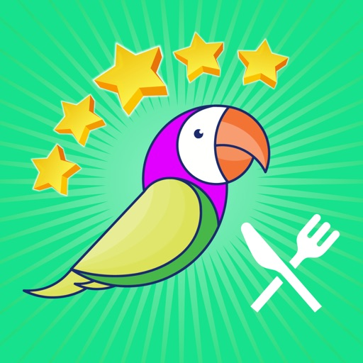
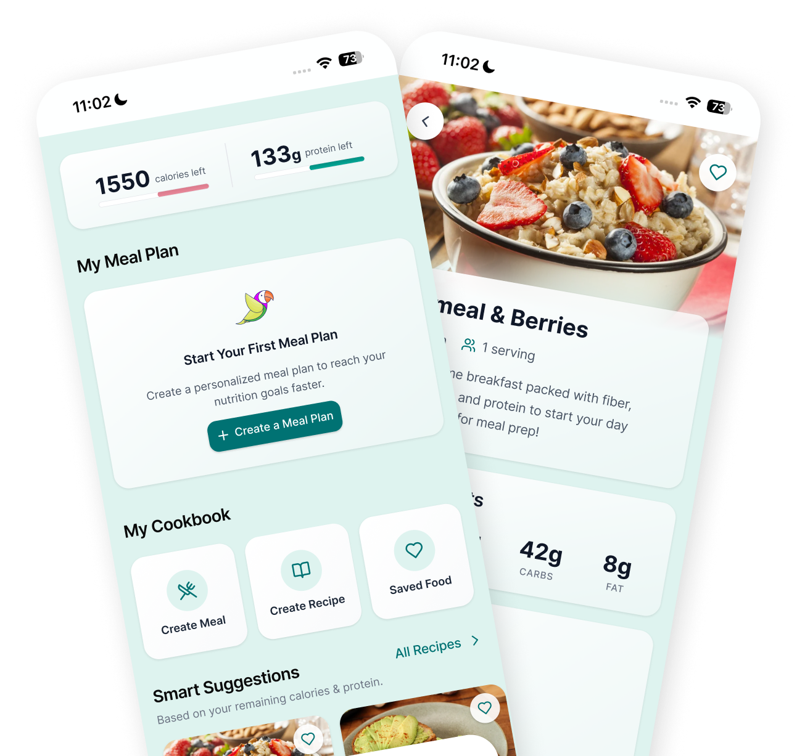
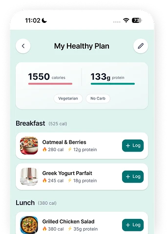
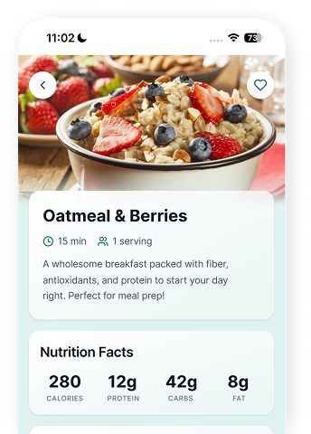
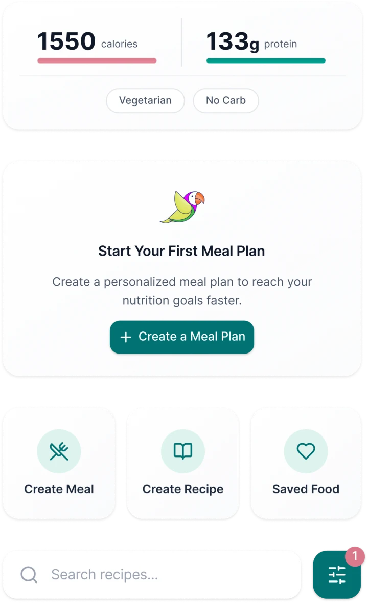
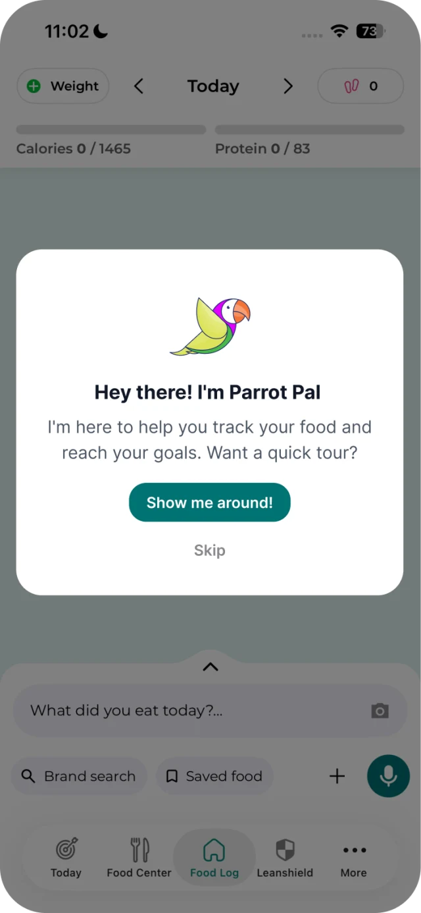
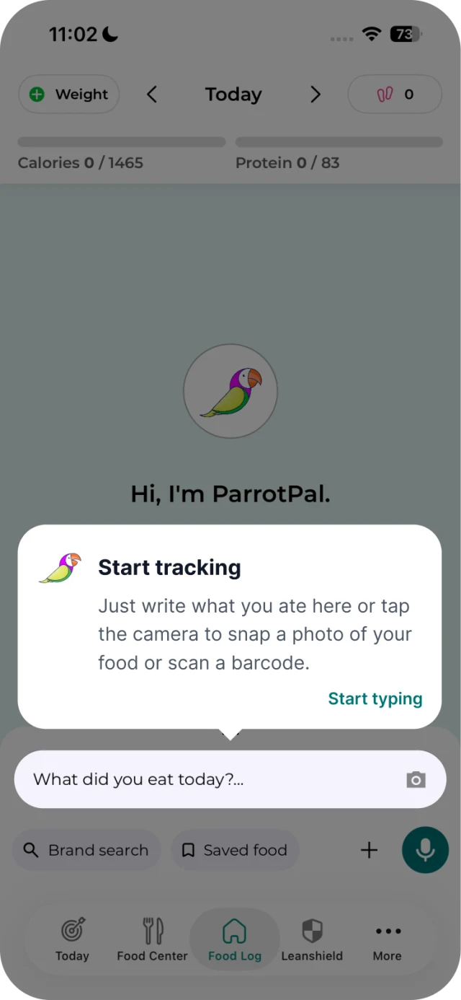
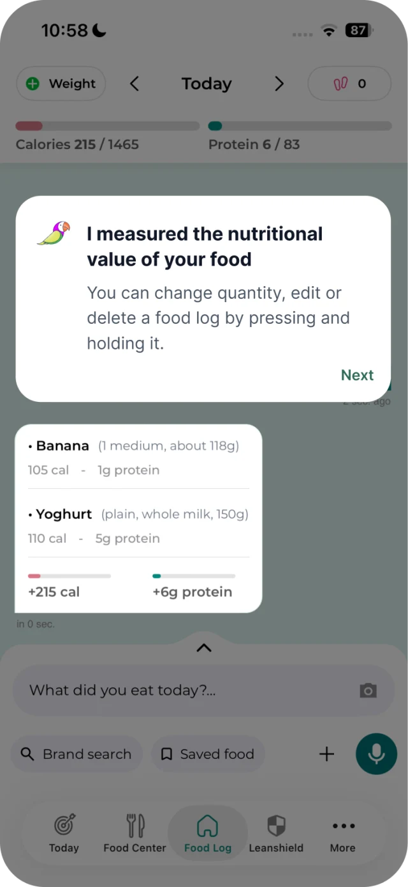
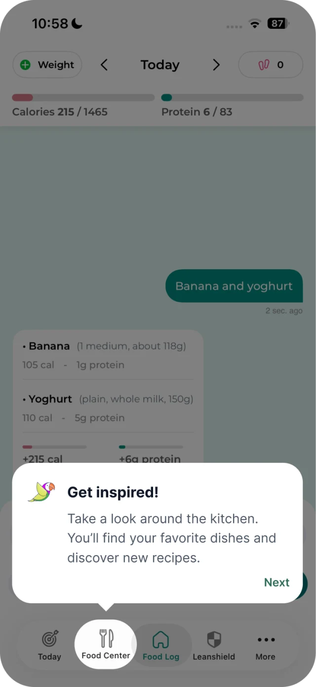

Calorie-Tracking AppTurning an unused
section into a
daily entry point

Users weren't using an entire section of the app.
Parrot Pal's Food Center section was initially created to enhance the user experience once they have entered their meals in the log section.
Yet data analysis showed that most users would visit the Food Center section once and never come back, although it is accessible directly through the app's tapbar.
UX/UI Analysis
The Food Center was a catch-all section mixing custom food creation actions with a food log summary, a recommended meal plan for the day, and uncontextualized recipe suggestions. Users had no clear idea what the section was actually for.
-
Unclear purpose Users didn't understand what the page was for or what actions to take.
-
Low perceived value The benefits of each feature were unclear or not immediate.
-
UI inconsistency The design didn't match the rest of the app, reducing trust and coherence.
-
Misplaced content The food log summary added noise and didn't belong in this section.
Users don't explore features. They respond to clear, immediate value.
Elevate what users actually need.
Show value immediately, not after exploration.
Noise reduces trust and clarity.
Consistency builds confidence.
Refocus the section around the main added value: help users cook according to their needs
New flow:
Technical constraints
Due to resource constraints, the proposed solution should maintain the current UI while introducing a more modern look that will serve as the foundation for future changes to the app.
Identify what matters
Through user workshops, two features stood out.
- Meal plan: users wanted a coherent daily plan
- Recipe browsing: users wanted relevant inspiration
Remove noise
The food log summary was removed from this section.
- It was relocated to the "Today" page, where it naturally belongs.
- This reduced cognitive load and clarified the purpose of the page.
Make recommendations relevant
Recipe suggestions were redesigned around remaining daily calories.
- Users now see only recipes that match their remaining daily calories.
- This turns recipe browsing into a personal, actionable tool rather than generic content.
Redesign the meal plan
A full daily plan aligned with the user's calorie target.
- Instead of generic suggestions, users get a coherent plan for the day.
- Meals are ranked in categories: breakfast, lunch, dinner, and snacks.
- The calorie goals are set by default to match the daily ones, but can be adjusted by the user to achieve specific result.
- When a recipe from the Plan is logged, it automatically updates the Plan's calories and proteins counter.

Improve the recipe experience
The recipe page was redesigned to be more appealing and easier to browse.
- Better visuals, clearer structure, and stronger hierarchy.
- Limiting the number of recipes to keep only the best ones.
- Like option to save the recipe in a list of favorites.
- The goal was to make recipes feel desirable, not only functional.

Align the UI
The entire section was redesigned to match the rest of the app and stand out at the same time.
- Consistent components and improved hierarchy.
- Modern UI that fits in with Apple liquid design.

A focused entry point for daily meal decisions
The Food Center now opens with the user's remaining calories and proteins for the day. They can create a personalized meal plan based on these metrics, create their own meals or let themselves be tempted by delicious recipes, all tailored to their needs.
- Calories & proteins remaining for the day, shown upfront
- Personalized meal plans built from daily goals
- Recipes and custom meals tailored to individual needs
Major improvements
Users revisiting the section in subsequent sessions.
Taps on recipes and meal plans increased significantly.
The number of free users converting to paid users has significantly increased.
Boost Food Center usage by increasing its visibility
Following the Food Center success, I worked on a new onboarding tutorial to better explain the structure of the app and drive users toward the section. The main goal was to capitalize on the positive metrics generated by the new Food Center by increasing its visibility, while improving onboarding clarity for first-time users.




The new onboarding drove a good increase in Food Center visits among first-time users.
This led to a further increase in the trial conversion.
Good UX doesn't stop at the feature.
It fits seamlessly into an existing context.